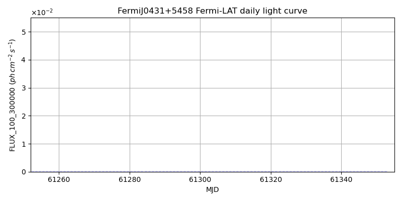
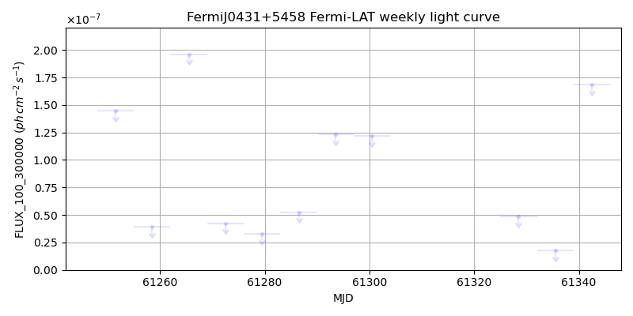
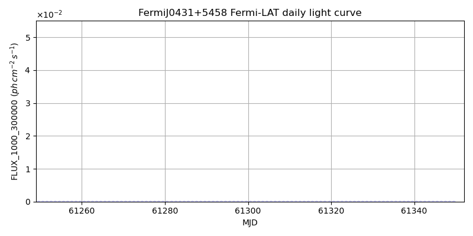
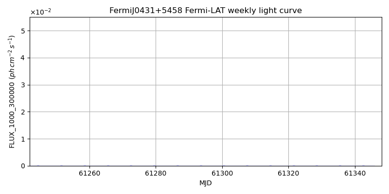

LAT Lightcurve site: https://fermi.gsfc.nasa.gov/ssc/data/access/lat/msl_lc/source/Fermi_J0431p5458
NED: Query
Time of last update of this page: UT: 2026-11-06 16:14 (MJD: 61350.677)
| Property | Value |
|---|---|
| R.A. | 4:31:26.40 |
| Dec. | 54:58:48.0 |
| z | 0.000 |
| 3FGL SpectrumType | |
| 3FGL PL Index | -1.00 |
| 3FGL Flux_100_300000 | -1.00e+00 |
| 3FGL Flux_1000_300000 | -1.00e+00 |
| 3FGL Flux >200 GeV | -1.00e+00 |
| 3FGL Extrap. Crab >200 GeV | -1.00 |
| 3FGL Flux After EBL Absorption >200GeV | -1.00e+00 |
| 3FGL EBL Crab Fraction >200GeV | -1.00 |

| MJD | dMJD | Flux | dFlux | Frac3FGL | FracCrab>200GeV | EBLFracCrab>200GeV |
|---|---|---|---|---|---|---|
| 61345.50 | 0.50 | 7.66e-08 | 0.00e+00 | 0.00 | 0.00 | -0.00 |
| 61346.50 | 0.50 | 1.13e-07 | 0.00e+00 | 0.00 | 0.00 | -0.00 |
| 61347.50 | 0.50 | 1.83e-07 | 0.00e+00 | 0.00 | 0.00 | -0.00 |
| 61348.50 | 0.50 | 1.13e-07 | 0.00e+00 | 0.00 | 0.00 | -0.00 |
| 61349.50 | 0.50 | 4.52e-08 | 0.00e+00 | 0.00 | 0.00 | -0.00 |

| MJD | dMJD | Flux | dFlux | Frac3FGL | FracCrab>200GeV | EBLFracCrab>200GeV |
|---|---|---|---|---|---|---|
| 61314.50 | 3.50 | 2.78e-07 | 0.00e+00 | 0.00 | 0.00 | -0.00 |
| 61321.50 | 3.50 | 5.16e-07 | 0.00e+00 | 0.00 | 0.00 | -0.00 |
| 61328.50 | 3.50 | 4.84e-08 | 0.00e+00 | 0.00 | 0.00 | -0.00 |
| 61335.50 | 3.50 | 1.75e-08 | 0.00e+00 | 0.00 | 0.00 | -0.00 |
| 61342.50 | 3.50 | 1.69e-07 | 0.00e+00 | 0.00 | 0.00 | -0.00 |

| MJD | dMJD | Flux | dFlux | Frac3FGL | FracCrab>200GeV | EBLFracCrab>200GeV |
|---|---|---|---|---|---|---|
| 61345.50 | 0.50 | 2.20e-08 | 0.00e+00 | 0.00 | 0.00 | -0.00 |
| 61346.50 | 0.50 | 3.28e-08 | 0.00e+00 | 0.00 | 0.00 | -0.00 |
| 61347.50 | 0.50 | 1.52e-08 | 0.00e+00 | 0.00 | 0.00 | -0.00 |
| 61348.50 | 0.50 | 1.57e-08 | 0.00e+00 | 0.00 | 0.00 | -0.00 |
| 61349.50 | 0.50 | 1.46e-08 | 0.00e+00 | 0.00 | 0.00 | -0.00 |

| MJD | dMJD | Flux | dFlux | Frac3FGL | FracCrab>200GeV | EBLFracCrab>200GeV |
|---|---|---|---|---|---|---|
| 61314.50 | 3.50 | 4.14e-09 | 0.00e+00 | 0.00 | 0.00 | -0.00 |
| 61321.50 | 3.50 | 7.00e-09 | 0.00e+00 | 0.00 | 0.00 | -0.00 |
| 61328.50 | 3.50 | 8.23e-09 | 0.00e+00 | 0.00 | 0.00 | -0.00 |
| 61335.50 | 3.50 | 4.99e-09 | 0.00e+00 | 0.00 | 0.00 | -0.00 |
| 61342.50 | 3.50 | 1.22e-08 | 0.00e+00 | 0.00 | 0.00 | -0.00 |
--------------------------------------------------------- Using user-supplied coords: 4:31:26.40 54:58:48.0 2000 --------------------------------------------------------- FLWO UT night of: 2026-11-07 Local Sid. @ Midnight: 02:42 Sunset (-15.0) (local, UT): 18:39 01:39 Sunrise (-15.0) (local, UT): 05:36 12:36 Moonrise (local, UT): 05:16 12:16 Moonset (local, UT): Moon phase: 0.04 --------------------------------------------------------- AzTime LSID UT Obj_el Obj_az Mn_el Mn_az Sep. --------------------------------------------------------- 18:39 21:20 01:39 16.1 34.5 -35.5 278.9 119.9 19:09 21:50 02:09 19.8 36.7 -41.6 283.5 120.2 19:39 22:20 02:39 23.8 38.7 -47.5 288.8 120.4 20:09 22:50 03:09 27.8 40.2 -53.3 295.3 120.7 20:39 23:20 03:39 32.0 41.4 -58.7 303.4 120.9 21:09 23:50 04:09 36.3 42.1 -63.5 313.9 121.2 21:39 00:20 04:39 40.6 42.3 -67.5 328.0 121.5 22:09 00:50 05:09 44.9 41.9 -70.0 346.2 121.7 22:39 01:20 05:39 49.1 40.7 -70.5 6.9 122.0 23:09 01:51 06:09 53.2 38.5 -68.8 26.6 122.3 23:39 02:21 06:39 57.0 35.1 -65.4 42.5 122.6 00:09 02:51 07:09 60.5 30.2 -60.9 54.4 122.8 00:39 03:21 07:39 63.4 23.4 -55.8 63.5 123.1 01:09 03:51 08:09 65.5 14.7 -50.2 70.6 123.4 01:39 04:21 08:39 66.5 4.4 -44.4 76.4 123.6 02:09 04:51 09:09 66.4 353.6 -38.4 81.4 123.9 02:39 05:21 09:39 65.2 343.6 -32.4 85.8 124.2 03:09 05:51 10:09 62.9 335.2 -26.3 89.9 124.4 03:39 06:21 10:39 59.9 328.8 -20.2 93.7 124.7 04:09 06:51 11:09 56.3 324.1 -14.2 97.5 124.9 04:39 07:21 11:39 52.4 321.0 -8.1 101.2 125.2 05:09 07:52 12:09 48.3 319.0 -1.2 105.0 125.4 05:36 08:19 12:36 44.4 318.0 3.4 108.6 125.6 --------------------------------------------------------- Dark hours >55 deg.: 4.94 srcstart (UT): 2026-11-07 06:22 srcend (UT): 2026-11-07 11:19